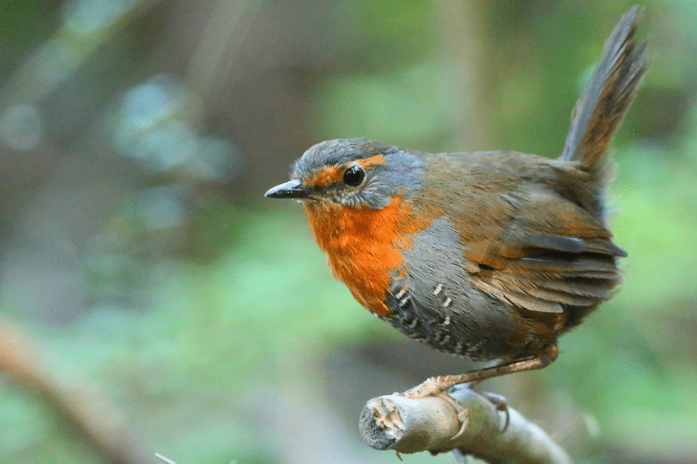

El chucao, tricao, denominado también tapaculo chucao o tapacola chucao, es una especie de ave paseriforme perteneciente a la familia Rhinocryptidae, una de las dos del género Scelorchilus. Es endémica de los bosques templados del centro-sur de Chile, y en áreas fronterizas de Argentina. En la creencia popular, su grito anuncia la suerte de quien lo escuche: para algunos el oírlo a la derecha es señal de buena suerte y oírlo a la izquierda una mala señal; mientras que para otros, anuncia mala suerte oír el grito habitual ("huithreu", "huithrothroy") y un buen augurio si se oye el grito menos frecuente ("chudec").